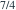

两人独立出价，均服从 U(1,2)。成交价取较大出价，期望为？
- A

- B

- C

- D
我已思考，展开答案与解析
正确答案：B
- 减去1后为两个U(0,1)变量，最大值均值为2/3。加回1得5/3。
易错提醒先明确分布参数、独立性和统计量的定义，再进行计算。
南审 813 · 2022 · 第2页 三·2；从大题提取考点并重写为单选
单选改编；题干与选项已重新编排
查看参考来源

南审 813 · 2022 · 第2页 三·2；从大题提取考点并重写为单选
单选改编；题干与选项已重新编排
查看参考来源